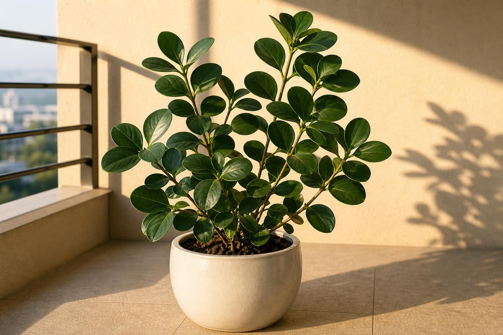
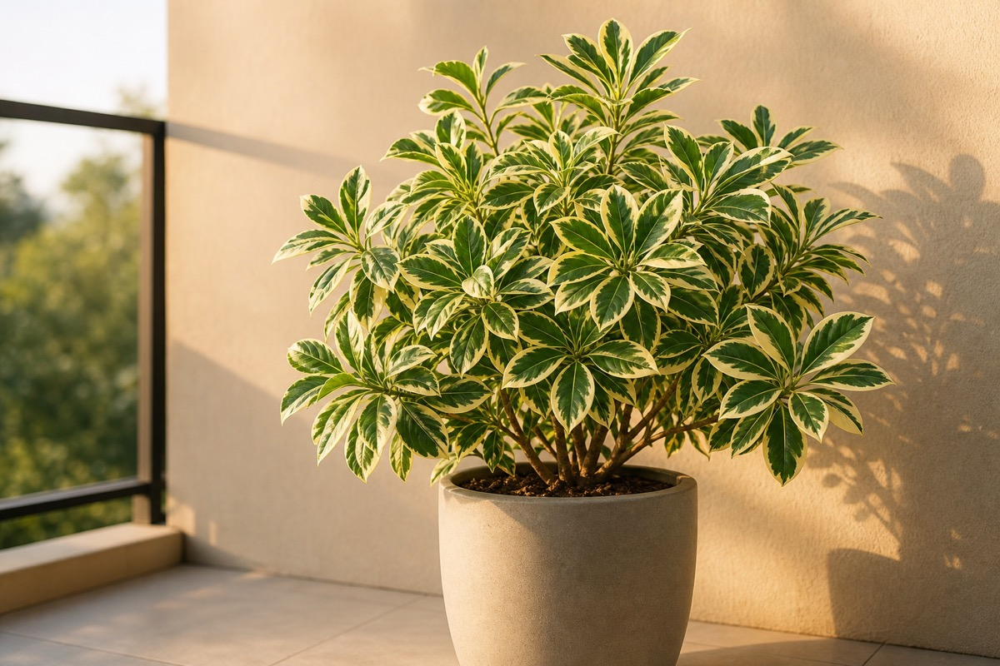
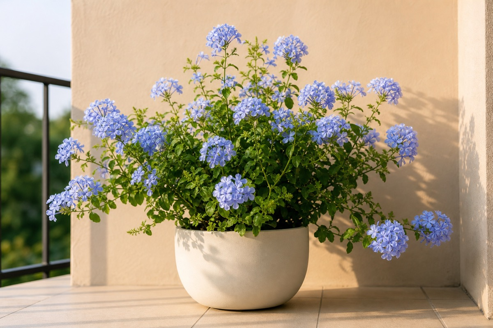

客廳主角
讓空間有重心，不只是擺滿，而是有一個能讓視線停下來的綠色主景。
重心主景安定感
有些家不是不漂亮，只是少了一點能讓人放鬆下來的氣息。一盆植物放在對的位置，會讓空間變得柔和、安定，也讓原本太空、太硬、太急的地方，慢慢有了生命感。
我們選植物，不只看它漂不漂亮。也看它適不適合這個家的光、風、位置，以及你希望這個地方變成什麼樣子。
它不是突然改變生活，
只是每天安靜地長一點，
讓家慢慢有了回應。
小圖卡與手繪線稿可以出現，但只作為輔助：讓資訊更柔和，不取代真實照片與居家情境。
這不是三個分頁。它是一個完整單頁式網站：先被橫幅吸引，再依位置、條件與植物性格一路往下理解。
有些改變，不需要從整個家開始。也許只是玄關少了一點迎接感，客廳太硬，陽台的風太直，或是書桌旁少了一點安定。
讓空間有重心，不只是擺滿，而是有一個能讓視線停下來的綠色主景。

每天開門的第一眼，如果有一點圓潤的綠，家就不是空的，而是在等你回來。

有些植物站在風裡，不只是好看，而是替家接住外面的光、風和衝感。
窗邊是光進來的地方，如果有植物接住它，光就不只是照進來，而是留下來。

柔化冷硬線條，讓櫃體和牆面之間多一點活的層次。

一束花不只是裝飾，它會提醒你：今天這一餐，也值得被好好對待。
植物真正能不能留下來，常常不是由喜歡決定，而是由家的條件決定。
直射光、散射光、半陰，會決定植物能不能健康留下。
陽台、窗邊、高樓層，風的強弱會改變植物選擇。
東向溫和、南向光足、西向曝曬、北向偏陰，不可混在一起講。
多久澆水、能不能修剪、想療癒還是想遮擋，都會影響配置。
正式版本可以整理成 20 種家的綠意性格。這裡先用幾張小圖卡建立節奏：短、準、有感，不寫成長篇植物百科。
撐起客廳或角落的存在感。
玄關、入口、第一眼的穩定感。
書桌、床邊、小角落，不壓迫。
陽台、戶外、風口，接光也接風。
適合玄關與客廳角落，穩住第一眼，也有圓滿祝福感。
適合開放或半開放陽台，接住光與風，形成戶外綠意屏障。
放在餐桌與日常視線裡，讓生活有一點被對待的儀式感。